Data exploration (extensive)
Prior to the analysis, we should explore our data. We have a rather complex dataset: as discussed in the session on simple linear regression session, we can imagine how the (log2) survival time of the fish not only depends on the dose of poison that was administered, but also on the weight of the fish and the fish species.
To start our data exploration, we will make use of the ggpairs function of the GGally R package. This function will generate a visualization containing multiple panels, which display (1) univariate plots of the different variables in our dataset, (2) bivariate plots and (3) correlation coefficients between the different variables.
poison %>%
ggpairs + theme_bw()
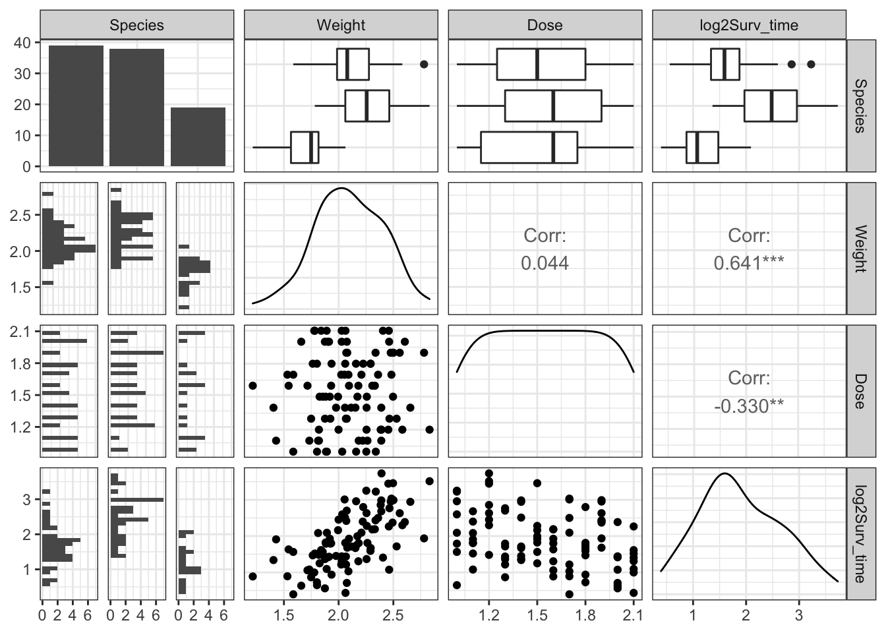
Based on these plots, we observe that:
The survival time seems to be associated with dose, fish weight and species.
The association between weight and survival time is very strong and positive.
Species 2 (gold fish) are more resistant to the poison.
There is an association between weight and species.
Knowing this, we now make additional relevant visualizations.
First, make a scatterplot that displays the association between poison dose and log2 survival time. To check if this association could be linear, we fit a linear regression line and a smooth “loess” line through the data cloud.
poison %>%
ggplot(aes(x=Dose,y=log2Surv_time)) +
geom_point() +
stat_smooth(method = "loess") +
geom_smooth(method='lm',col="black") +
ylab("Survival time (log2 min)") +
xlab("Dose (mg)") +
theme_bw()
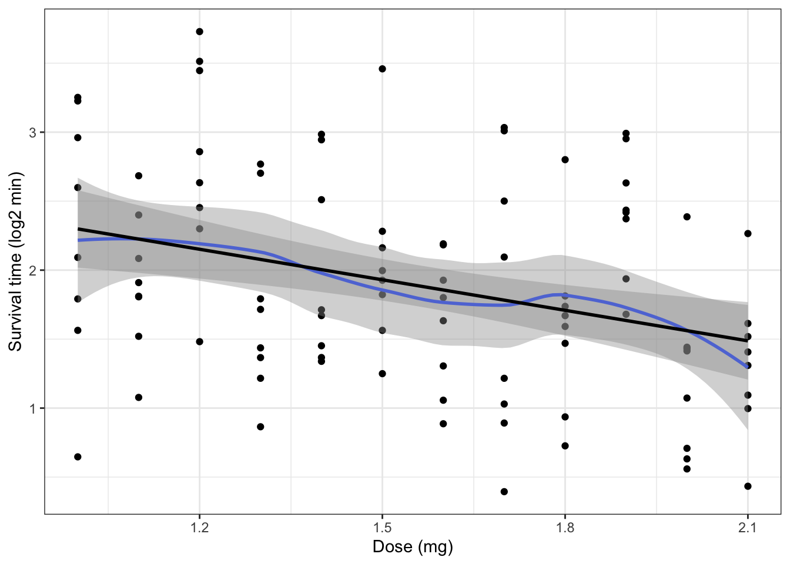
The linear regression line (black) is a good approximation of the best fitting smooth line (blue) through the data. Based on this figure, it seems realistic to suggest a linear relationship between dose and survival, where higher doses have lower (log2) survival times.
However, this plot is missing the effect that the other explanatory variables, fish weight and species, may have on the relationship between dose and survival time. To assess the effect of species, we may color each dot in the above scatterplot according to species. In addition, we may fit a separate linear regression line for each species.
poison %>%
ggplot(aes(x = Dose, y = log2Surv_time, col=Species)) +
geom_point(size=2) +
scale_color_manual(values = c("red", "darkgoldenrod", "black")) +
stat_smooth(method = "lm", se = FALSE) + # se = FALSE omits confidence
# interval around regression line to make to plot less cluttered
ylab("Survival time (log2 min)") +
xlab("Dose (mg)") +
ggtitle("Association between dose and survival time - per species") +
theme_bw()
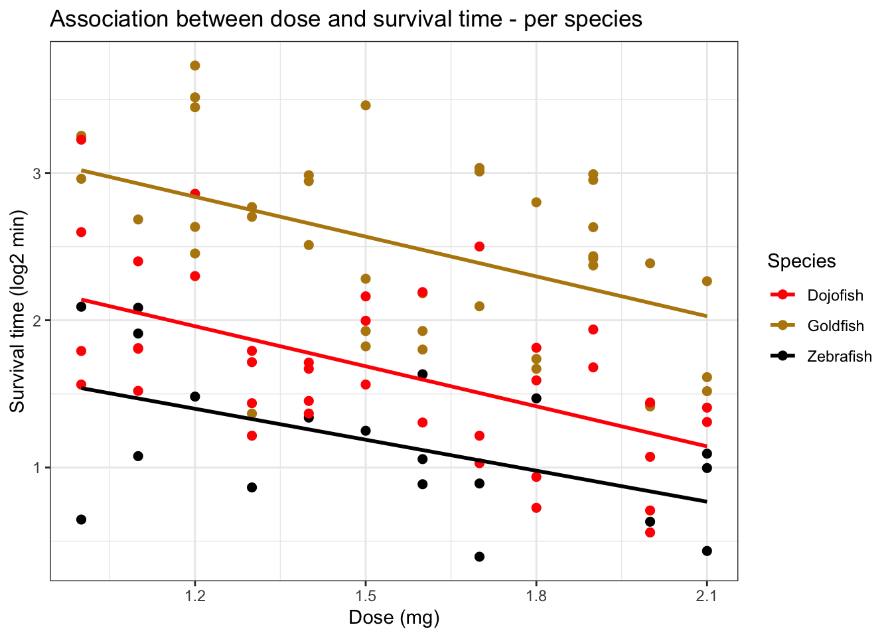
We indeed observe a strong influence of species on the survival time. Clearly, zebrafish have the lowest survival time, whereas goldfish have the highest survival time. However, we also see that the slopes of the different regression lines are very similar between the different species, suggesting a limited interaction of the species effect and the relationship between dose and survival time (see later theory session on interactions).
Next, we make a scatterplot to visualize the relationship between fish weight and survival time. We again fit a smooth “loess” curve through the data cloud. Wee additionally color the observation according to species.
poison %>%
ggplot(aes(x = Weight, y = log2Surv_time, col = Species)) +
geom_point() +
scale_color_manual(values = c("red", "darkgoldenrod", "black")) +
stat_smooth(method = "loess", col="blue") +
ylab("Survival time (log2 min)") +
xlab("Weight") +
ggtitle("Association between weight and survival time") +
theme_bw()
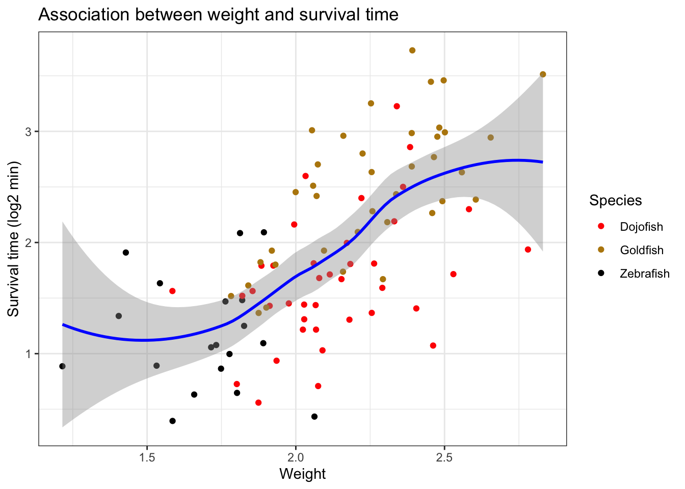
We observe a clear, positive relationship between fish weight and survival time, with heavier fish living longer than lighter fish. We also observe that fish weight is associated with fish species, with zebrafish being the lightest fish, on average. Wee may visualize this relationship more clearly using boxplots
poison %>%
ggplot(aes(x = Species, y = Weight, col = Species)) +
geom_boxplot(outlier.shape = NA) +
geom_jitter() +
scale_color_manual(values = c("red", "darkgoldenrod", "black")) +
ylab("Weigth (g)") +
ggtitle("Association between species and weight") +
theme_bw()
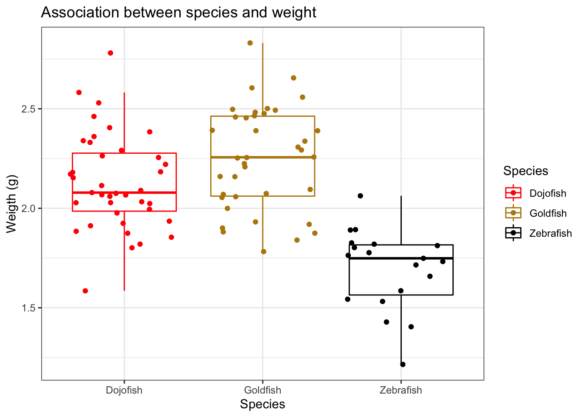
Next, we maay assess the association between species and log2 survival time using boxplots.
poison %>%
ggplot(aes(x = Species, y = log2Surv_time, col = Species)) +
geom_boxplot(outlier.shape = NA) +
geom_jitter() +
scale_color_manual(values = c("red", "darkgoldenrod", "black")) +
ylab("Survival time (log2 min)") +
ggtitle("Association between species and survival time") +
theme_bw()
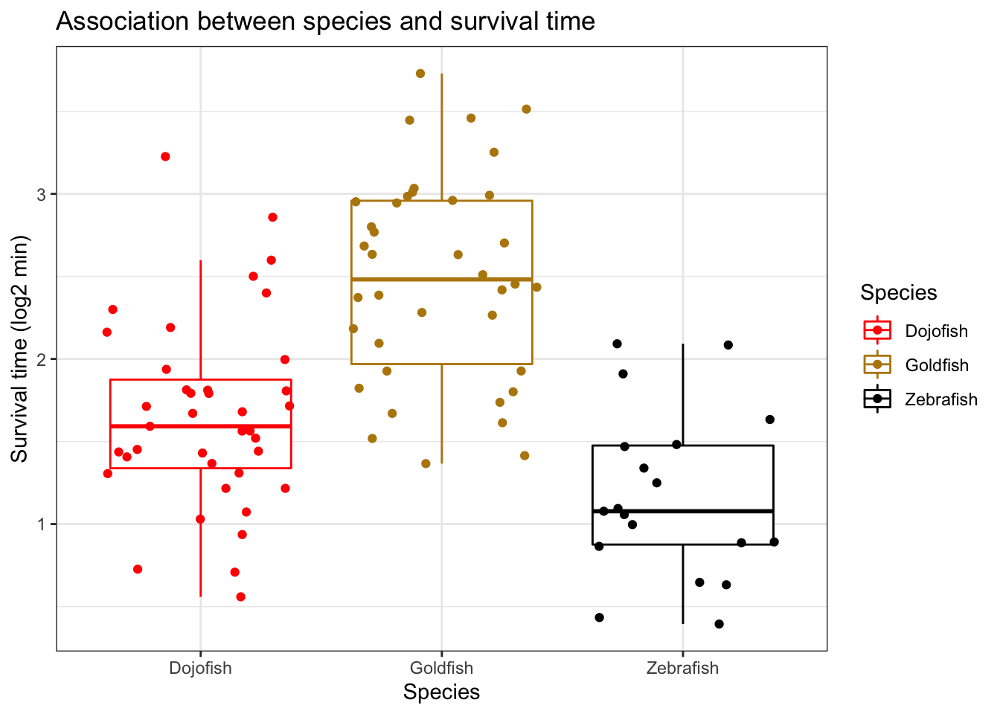
There is a clear association between species and log2 survival time. However, not that the relationship between species and survival time is confounded with the effect of weight!
Finally, there is one additional, less expected relationship between the different variables in the data. We make a scaatterplot for Dose and weight.
poison %>%
ggplot(aes(x = Dose, y = Weight)) +
geom_point() +
ggtitle("Association between dose and weight") +
theme_bw() +
stat_summary(
geom = "point",
fun.y = "mean",
col = "black",
size = 4,
shape = 24,
fill = "red")
## Warning: `fun.y` is deprecated. Use `fun` instead.
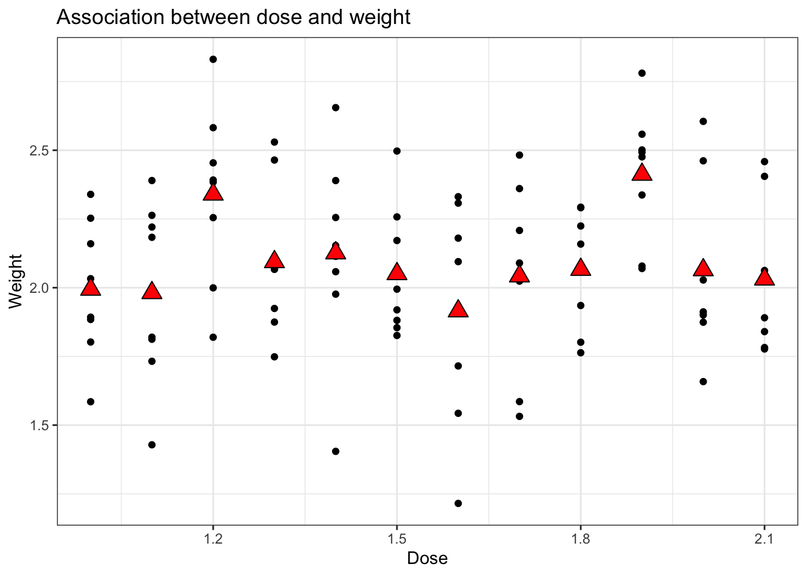
We additionally observe that the average weight of the fish not uniform for the different dose that were administered. This can be explained by the fact that the experimental design was not balanced with respect to species and dose. More specifically, each dose was administered to 8 fish,
colSums(table(poison$Species, poison$Dose))
## 1 1.1 1.2 1.3 1.4 1.5 1.6 1.7 1.8 1.9 2 2.1
## 8 8 8 8 8 8 8 8 8 8 8 8
however, the distribution of species across the different doses is variable.
table(poison$Species, poison$Dose)
##
## 1 1.1 1.2 1.3 1.4 1.5 1.6 1.7 1.8 1.9 2 2.1
## Dojofish 4 4 2 4 4 3 2 3 4 2 5 2
## Goldfish 2 1 5 3 3 4 3 3 3 6 2 3
## Zebrafish 2 3 1 1 1 1 3 2 1 0 1 3
However, even if we would subset the data to e.g. contain only dojofish, the fish weights are still not nicely uniform accros the different poison dosages (due to random fluctions).
poison %>%
filter(Species == "Dojofish") %>%
ggplot(aes(x = Dose, y = Weight)) +
geom_point() +
ggtitle("Association between dose and weight") +
theme_bw() +
stat_summary(
geom = "point",
fun.y = "mean",
col = "black",
size = 4,
shape = 24,
fill = "red")
## Warning: `fun.y` is deprecated. Use `fun` instead.

In conclusion, we see that all three explanatory variables (dose, species and weight) seem to have an effect on the log2 survival time. In addition, these explanatory variable or also not independent. As such, we should try to come up with a model that accomodates these different effects.
Ideally, we should construct a model that accounts for all the different associations observed in the data exploration. Such model should
model the association between Dose and log2 survival time, while
accounting for the species effect,
accounting for the weight effect,
accounting for the fact that the association between Dose and log2 survival time may be different for different species.
and accounting for the fact that the association between Dose and log2 survival time may be different for fish of different weight.
By the time of the last exercise session in this series, we will learn how to construct such a model. For now, we will simplify the research question by reducing the dataset to contain only a single fish species, the dojofish, i.e.:
poison_dojo <- poison %>%
filter(Species == "Dojofish")
For demonstrational purposes, we will analyse this reduced dataset with three different strategies with increasing complexity:
1. a simple linear regression model (insufficient) 2. an additive linear regression model (insufficient) 3. a linear regression model with interaction
Simple linear regression (insufficient)
This is the same regression model that we have already fit in the exercise session on simple linear regression, with Dose as the only explanatory variable for log2Surv_time.
# fit a linear regression model with 'Surv_time' as response variable and
# 'Dose' as predictor variabele
lm_simple <- lm(log2Surv_time ~ Dose, data=poison_dojo)
## display the diagnostic plots of the model
par(mfrow=c(2,2))
plot(lm_simple)
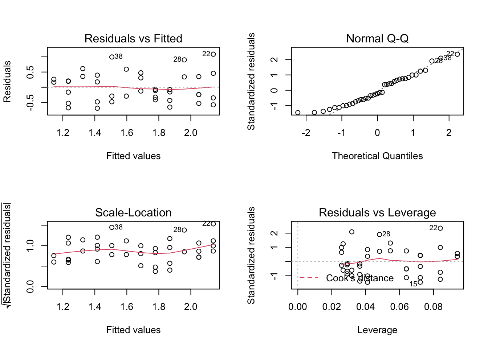
- The independence assumption not met, given that we expect that fish of similar weight will have a similar association between dose and survival time. For now, we will ignore this problem.
- The linearity assumption is met.
- The normality assumption is met.
- The homoscedasticity assumption is met.
Finally, we look at the output of the model.
##
## Call:
## lm(formula = log2Surv_time ~ Dose, data = poison_dojo)
##
## Residuals:
## Min 1Q Median 3Q Max
## -0.6891 -0.3804 -0.1076 0.3452 1.0856
##
## Coefficients:
## Estimate Std. Error t value Pr(>|t|)
## (Intercept) 3.0469 0.3462 8.800 1.33e-10 ***
## Dose -0.9063 0.2208 -4.104 0.000215 ***
## ---
## Signif. codes: 0 '***' 0.001 '**' 0.01 '*' 0.05 '.' 0.1 ' ' 1
##
## Residual standard error: 0.4828 on 37 degrees of freedom
## Multiple R-squared: 0.3128, Adjusted R-squared: 0.2942
## F-statistic: 16.84 on 1 and 37 DF, p-value: 0.0002146
Or for an interpretation at the original scale (minutes in stead of log2 minutes):
2^(lm_simple$coef)["Dose"]
## Dose
## 0.5335551
2^(confint(lm_simple))[2,1]
## [1] 0.3912681
There is an extremely significant effect of the poison dose on the log2-transformed survival time of dojofish (p-value = 0.000215). For each extra milligram of poison administered, the geometric mean of survival time will decrease by a factor of 0.534, (95% CI [0.391, 0.728]).
However, we know we have to be very careful with these results, since we did not include weight as a covariate to our model!
Analysis with additive effect for weight
Model specification
In a fist attempt to account for the effect of weight, we may add the weight variable as an additional covariate to our linear regression model, such that
\[
y_i=\beta_0+\beta_d x_d + \beta_g x_g + \epsilon_i,
\]
with \(\epsilon_i \text{ i.i.d. } N(0,\sigma^2)\).
Assumptions
The model will again be fit to allow for assessing the model assumptions
lm_additive <- lm(log2Surv_time ~ Dose + Weight, data = poison_dojo)
par(mfrow=c(2,2))
plot(lm_additive)
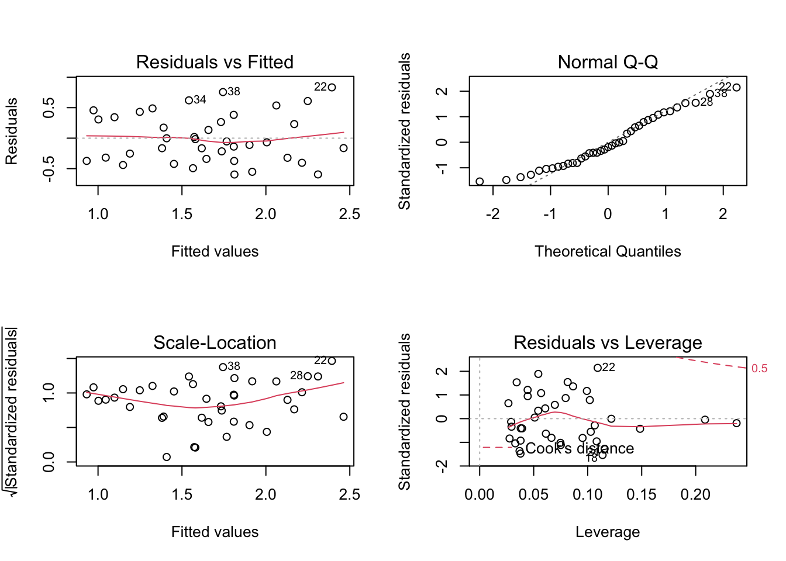
The assumption of independence (!), linearity and homoscedasticity are met.
Arguably, there might be some deviation from normality in the left tail of the distribution. However, when we would simulate data under the normality assumption, it seems that deviations of this size may be expected when normality is met:
set.seed(1406)
nobs <- nrow(poison_dojo)
data.frame(
y = c(lm_additive$res,
rnorm(nobs*8,
sd = sigma(lm_additive)
)
),
label = rep(
c("original data",
paste0("simulation ",1:8)),
each = nobs)) %>%
ggplot(aes(sample = y)) +
geom_qq() +
geom_qq_line() +
facet_wrap(~ label) +
theme_bw()
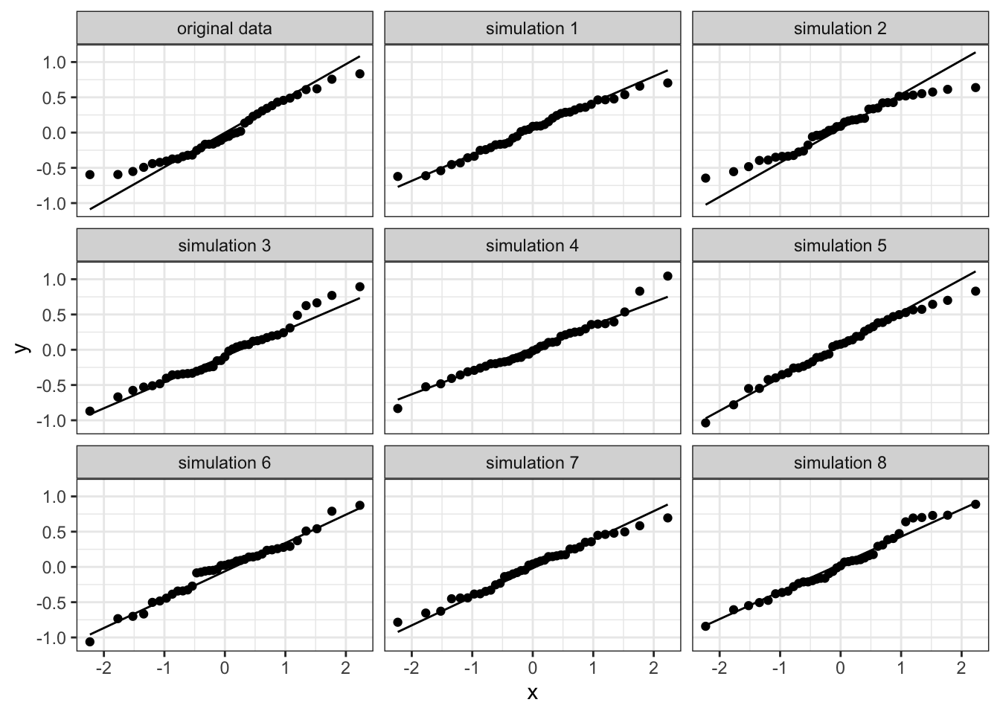
As such, all assumptions for linear regression are met.
Inference
We then inspect the results.
##
## Call:
## lm(formula = log2Surv_time ~ Dose + Weight, data = poison_dojo)
##
## Residuals:
## Min 1Q Median 3Q Max
## -0.59629 -0.33110 -0.06836 0.32507 0.83315
##
## Coefficients:
## Estimate Std. Error t value Pr(>|t|)
## (Intercept) 0.8294 0.6457 1.285 0.207119
## Dose -0.9590 0.1888 -5.081 1.17e-05 ***
## Weight 1.0783 0.2792 3.862 0.000451 ***
## ---
## Signif. codes: 0 '***' 0.001 '**' 0.01 '*' 0.05 '.' 0.1 ' ' 1
##
## Residual standard error: 0.4116 on 36 degrees of freedom
## Multiple R-squared: 0.5141, Adjusted R-squared: 0.4871
## F-statistic: 19.04 on 2 and 36 DF, p-value: 2.282e-06
Interpretation of model parameters
We see that the effect of dose on survival time has become more significant after we have incorporated weight in our model. This makes sense, because
From the data exploration, we learned that weight is associated with survival. As such, by incorporating weight in our model, we are able to explain a larger part of the variability in the response variable survival time. As a consequence, the variability in the residuals of the model will decrease, which in turn will lead to smaller standard error estimates for the different parameter estimates in the model.
From the data exploration, we additionally found that the (dojo-)fish weights are not perfectly uniform across the different poison dosages. Therefore, the pure effect between dose and survival time maay be somewhat disturbed by these (unwanted) fluctuations in weight, since we know fish weight also affects survival time. As such, we will be able to better estimate the pure effect between dose and survival if we correct the analysis for the effect of weight.
In conclusion, we will be able to (1) estimate the dosage effect more precisely and (2) estimate the dosage effect with less bias wheen we add weight as an additional covariate to our model.
In this model, the effect of Dose can be interpreted as the average change in the log2 survival time betwn two groups of dojofish with the same weight that are exposed to a poison dosage that differs 1 mg/L. In symbols:
\[\begin{eqnarray}
\hat{\mu_1}&=& \beta_0 + \beta_d x_{1d} + \beta_g x_g \text{ (average log2-survival time for dose 1 for a certain weight)}\\
\hat{\mu_2}&=& \beta_0 + \beta_d x_{2d} + \beta_g x_g \text{ (average log2-survival time for dose 2 for that same weight)}\\
\hat \mu_2- \hat \mu_1&=&\beta_0 + \beta_d x_{2d} + \beta_g x_g - (\beta_0 + \beta_d x_{1d} + \beta_g x_g) \text{ (difference in average log2-survival time between dose 2 en dose 1)}\\
\hat \mu_2-\hat \mu_1&=&\beta_d (x_{2d}-x_{1d})
\end{eqnarray}\]
If the difference in poison concentration is \((x_{2d}-x_{1d})=1\) mg/l, then we indeed observe that \(\hat \mu_2-\hat \mu_1=\beta_d\). \(\beta_d\) thus quantifies the as average change in the log2 survival time betwn two groups of dojofish with the same weight.
Conclusion
## (Intercept) Dose Weight
## 1.777004 0.514402 2.111484
## 2.5 % 97.5 %
## (Intercept) 0.7169728 4.4042734
## Dose 0.3945101 0.6707292
## Weight 1.4259918 3.1265018
The dose of the poison has an extremely significant effect on the survival time of dojofish (p-value = 1.17e-05). The geometric average of the survival time of dojofish is reduced (approximately halfed, factor = \(2^{\beta_d}=\) 0.514) if the dose of poison is increased with 1 mg/L (95% BI [0.395,0.671]).
The effect of weight on the survival time of dojofish is also extremely significant (p-value = 0.000451). The geometric average of the survival time of a dojofish that weighs 1 gram extra compared to another dojofish is approximately twice as long (factor = \(2^{ \beta_g}\)= 2.11, 95% BI [1.43,3.13]).
Analysis with interaction and main effect for weight
Model specification
\[
y_i=\beta_0+\beta_d x_d + \beta_g x_g +\beta_{d:g} x_d x_g+ \epsilon_i,
\]
with \(\epsilon_i \text{ i.i.d. } N(0,\sigma^2)\)
Assumptions
The model will again be fit to allow for assessing the model assumptions
# lm_Int <- lm(log2Surv_time ~ Dose+Weight+Dose:Weight, data = poison_dojo) # equivalent
lm_Int <- lm(log2Surv_time ~ Dose*Weight, data = poison_dojo) # * -> short notation
par(mfrow=c(2,2))
plot(lm_Int)
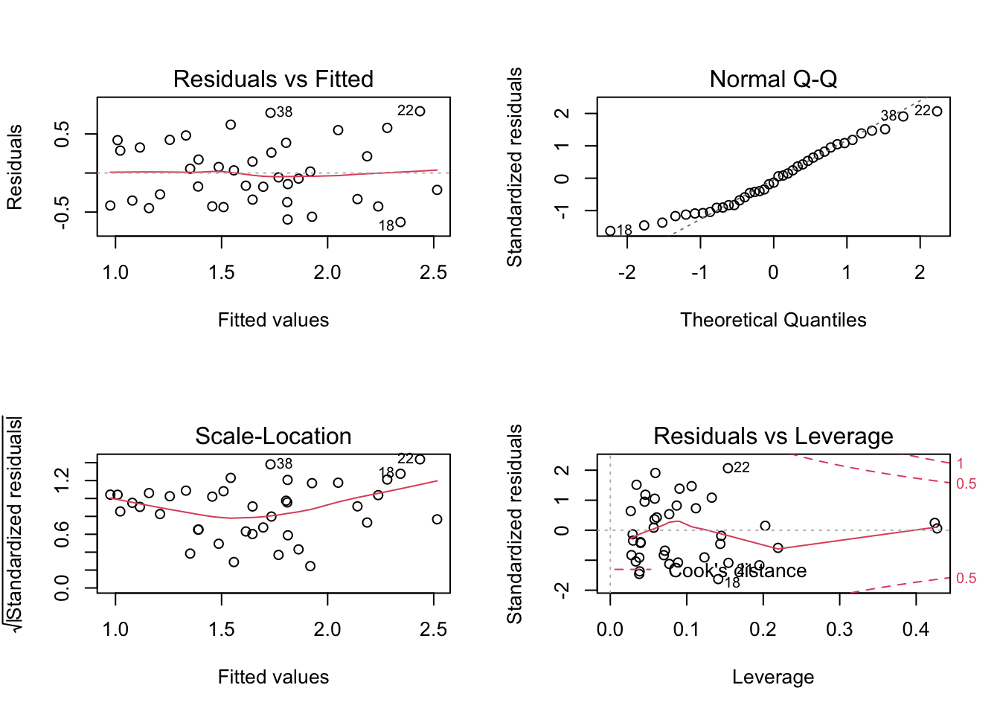
All assumption are met.
Inference
We then inspect the results.
##
## Call:
## lm(formula = log2Surv_time ~ Dose * Weight, data = poison_dojo)
##
## Residuals:
## Min 1Q Median 3Q Max
## -0.62807 -0.34662 -0.05587 0.30656 0.79086
##
## Coefficients:
## Estimate Std. Error t value Pr(>|t|)
## (Intercept) -0.2851 2.4062 -0.118 0.906
## Dose -0.2217 1.5440 -0.144 0.887
## Weight 1.6061 1.1325 1.418 0.165
## Dose:Weight -0.3485 0.7242 -0.481 0.633
##
## Residual standard error: 0.416 on 35 degrees of freedom
## Multiple R-squared: 0.5173, Adjusted R-squared: 0.4759
## F-statistic: 12.5 on 3 and 35 DF, p-value: 1.036e-05
Interpretation of model parameters
We may interpret the estimate parameters as follows:
For a fish with weight \(x_g\), the expected log2 survival time will be \(\beta_d+\beta_{d:g}*x_g\) higher when the poison dose is increased with 1 mg/L, as compared to fish with the same weight.
For a wish that was exposed to dose \(x_g\), the expected log2 survival time will be \(\beta_d+\beta_{d:g}*x_g\) higher for a fish with a weight that is 1 gram higher than that of another fish.
The parameter \(\beta_{d:g}\) can thus be interpreted in two ways. The easiest one is that the effect of dose on the log2 survival time is dependent on the weight of the fish. Alternatively, it can also be interpreted as the effect of weight on the log2 survival time being dependent on the dose that was administered.
Inference
The effect of dose is now parameterized by two model parameters (\(\beta_d\) and \(\beta_{d:g}\)). We first evaluate an omnibus hypotheses that there is no effect of dose, i.e., no main effect nor an interaction effect. We can test this with aan F-test that compares a full model (1) containing a main effect for dose, a main effect for weight and an interaction between dose and weight with a model (2) that only contains a main effect for weight (i.e. no effect for dose).
#lmDojo_weight <- lm(log2Surv_time ~ Dose*Weight, data = poison_dojo)
lmDojo_weight <- lm(log2Surv_time ~ Weight, data = poison_dojo)
anova(lmDojo_weight, lm_Int)
We observe an extremely significant (overall, or global) effect for dose on the log2 survival time of dojofish (p-value = 6.94e-05.
Conventional approach
We already estbalished that there is a significant overall effect of dose. Now, we will test if there is a significant interaction effect between dose and weight. Since we only have one interaction term in this model, this can be achieved in several ways:
- The
summary function
- An F-test comparing models with and without the interaction effect
- An ANOVA table with type III sum of squares
##
## Call:
## lm(formula = log2Surv_time ~ Dose * Weight, data = poison_dojo)
##
## Residuals:
## Min 1Q Median 3Q Max
## -0.62807 -0.34662 -0.05587 0.30656 0.79086
##
## Coefficients:
## Estimate Std. Error t value Pr(>|t|)
## (Intercept) -0.2851 2.4062 -0.118 0.906
## Dose -0.2217 1.5440 -0.144 0.887
## Weight 1.6061 1.1325 1.418 0.165
## Dose:Weight -0.3485 0.7242 -0.481 0.633
##
## Residual standard error: 0.416 on 35 degrees of freedom
## Multiple R-squared: 0.5173, Adjusted R-squared: 0.4759
## F-statistic: 12.5 on 3 and 35 DF, p-value: 1.036e-05
anova(lm_additive,lm_Int) #2
Anova(lm_Int,type="III") #3
There is no significant interaction between dose and weight. As such, the effect of dose on survival is not signifiantly different between fish of different weight.
The conventional approach is to now remove the interaction effect from the model. As such, we are left with the additivee linear regression model lm_additive that we have alreaady fitted above.
##
## Call:
## lm(formula = log2Surv_time ~ Dose + Weight, data = poison_dojo)
##
## Residuals:
## Min 1Q Median 3Q Max
## -0.59629 -0.33110 -0.06836 0.32507 0.83315
##
## Coefficients:
## Estimate Std. Error t value Pr(>|t|)
## (Intercept) 0.8294 0.6457 1.285 0.207119
## Dose -0.9590 0.1888 -5.081 1.17e-05 ***
## Weight 1.0783 0.2792 3.862 0.000451 ***
## ---
## Signif. codes: 0 '***' 0.001 '**' 0.01 '*' 0.05 '.' 0.1 ' ' 1
##
## Residual standard error: 0.4116 on 36 degrees of freedom
## Multiple R-squared: 0.5141, Adjusted R-squared: 0.4871
## F-statistic: 19.04 on 2 and 36 DF, p-value: 2.282e-06
2^(lm_additive$coef) # original scale
## (Intercept) Dose Weight
## 1.777004 0.514402 2.111484
## 2.5 % 97.5 %
## (Intercept) 0.7169728 4.4042734
## Dose 0.3945101 0.6707292
## Weight 1.4259918 3.1265018
Conclusion
The conclusion is exactly the same as for the additive model analysis above (obviously, as we are dealing with the same model):
The dose of the poison has an extremely significant effect on the survival time of dojofish (p-value = 1.17e-05). The geometric average of the survival time of dojofish is reduced (approximately halfed, factor = \(2^{\beta_d}=\) 0.514) if the dose of poison is increased with 1 mg/L (95% BI [0.395,0.671]).
The effect of dose on survival is not signifiantly different between fish of different weight. (p = 0.63).
Alternative approach
Alternatively, we may perform an analysis without removing the interaction effect.
##
## Call:
## lm(formula = log2Surv_time ~ Dose * Weight, data = poison_dojo)
##
## Residuals:
## Min 1Q Median 3Q Max
## -0.62807 -0.34662 -0.05587 0.30656 0.79086
##
## Coefficients:
## Estimate Std. Error t value Pr(>|t|)
## (Intercept) -0.2851 2.4062 -0.118 0.906
## Dose -0.2217 1.5440 -0.144 0.887
## Weight 1.6061 1.1325 1.418 0.165
## Dose:Weight -0.3485 0.7242 -0.481 0.633
##
## Residual standard error: 0.416 on 35 degrees of freedom
## Multiple R-squared: 0.5173, Adjusted R-squared: 0.4759
## F-statistic: 12.5 on 3 and 35 DF, p-value: 1.036e-05
The interaction effect is not significant, so we would accept the null hypothesis that there is no interaction effect. However, accepting a null hypothesis is a weak conlusion. In addition, we know that the power to find an interaction effect is low. As such, we may still want to include an interaction effect in the model (if we want to play safe).
With this model, we could still say something about the average dosis effect for the dojofish in this experiment. This would require us to marginalize accros all dojofish in the experiment, i.e.,
\[
\frac{\sum\limits_{i=1}^{n_\text{dojo}} (\beta_d + \beta_{d:w} x_{iw})}{n_\text{dojo}} = \beta_d + \beta_{d:w} \bar{x}_w
\]
In other words, we aree estimating the dose effect for “the average dojofish” in the experiment.
wBar <- poison %>%
pull(Weight) %>%
mean
wBar
## [1] 2.092847
The average weigth for a dojofish in this experiment is 2.09 grams.
We now evaluate the contrast for the marginal dose effect, i.e., if \(\beta_d+2.1313*\beta_{d:g}\) is significantly different from zero.
marginalDosisEffect <- glht(lm_Int, linfct = c("Dose + 2.1313*Dose:Weight = 0"))
summary(marginalDosisEffect)
##
## Simultaneous Tests for General Linear Hypotheses
##
## Fit: lm(formula = log2Surv_time ~ Dose * Weight, data = poison_dojo)
##
## Linear Hypotheses:
## Estimate Std. Error t value Pr(>|t|)
## Dose + 2.1313 * Dose:Weight == 0 -0.9645 0.1911 -5.046 1.4e-05 ***
## ---
## Signif. codes: 0 '***' 0.001 '**' 0.01 '*' 0.05 '.' 0.1 ' ' 1
## (Adjusted p values reported -- single-step method)
confint(marginalDosisEffect)
##
## Simultaneous Confidence Intervals
##
## Fit: lm(formula = log2Surv_time ~ Dose * Weight, data = poison_dojo)
##
## Quantile = 2.0301
## 95% family-wise confidence level
##
##
## Linear Hypotheses:
## Estimate lwr upr
## Dose + 2.1313 * Dose:Weight == 0 -0.9645 -1.3525 -0.5764
2^confint(marginalDosisEffect)$confint
## Estimate lwr upr
## Dose + 2.1313 * Dose:Weight 0.5124711 0.3916119 0.6706299
## attr(,"conf.level")
## [1] 0.95
## attr(,"calpha")
## [1] 2.030108
! notice that the marginal dosis effect is almost exactly the same as the effect that was estimated for the model without the interaction effect!
Conclusion
We observe an extremely significant (overall, or global) effect for dose on the log2 survival time of dojofish (p-value = 6.94e-05.
The effect of dose on survival is not signifiantly different between fish of different weight. (p = 0.63).
The marginal geometric average of the log2 survival approximateely halves (factor = 0.512) for fish that are subjectd to a dose that is 1 mg/L higher (95% CI [0.392, 0.671]), after correction for weight (p-value = 1.4e-05.
